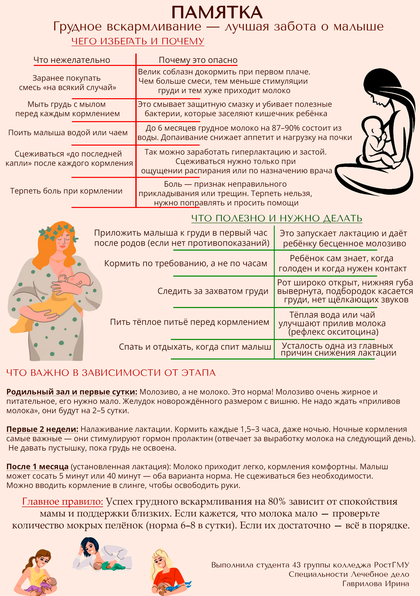
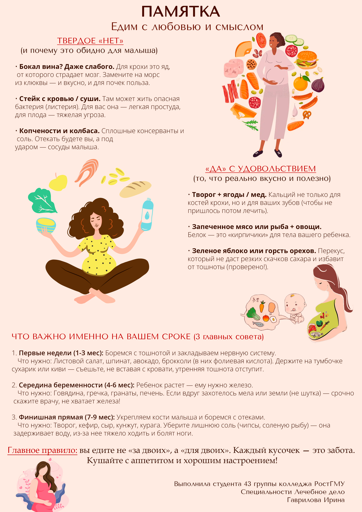
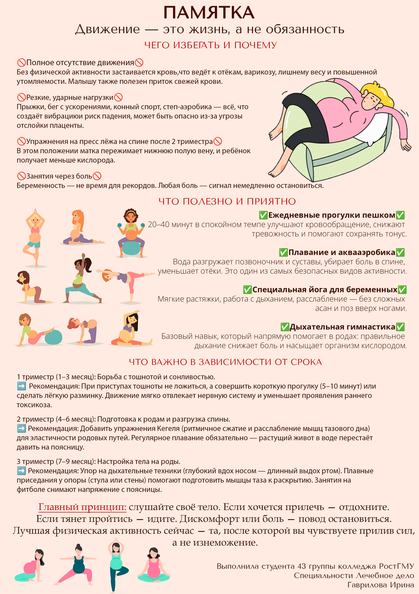
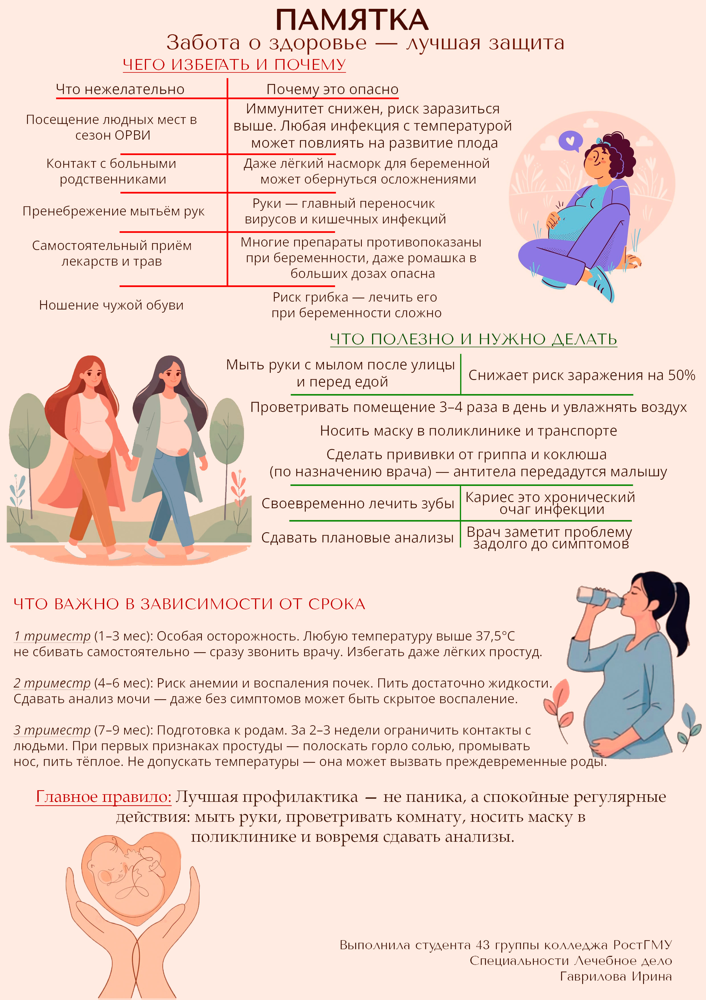
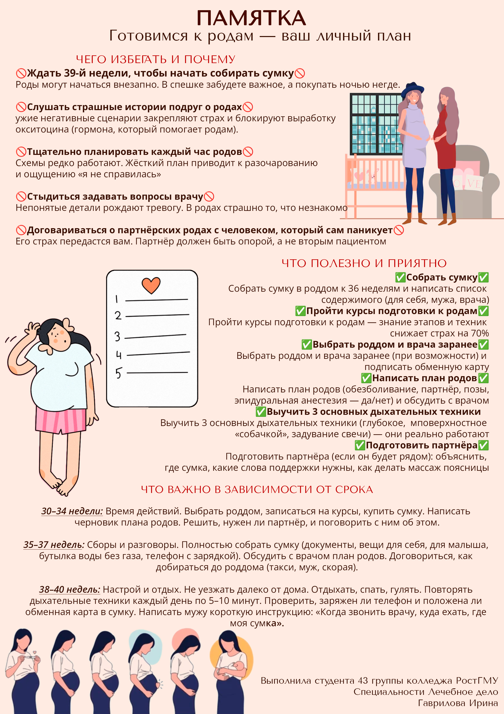
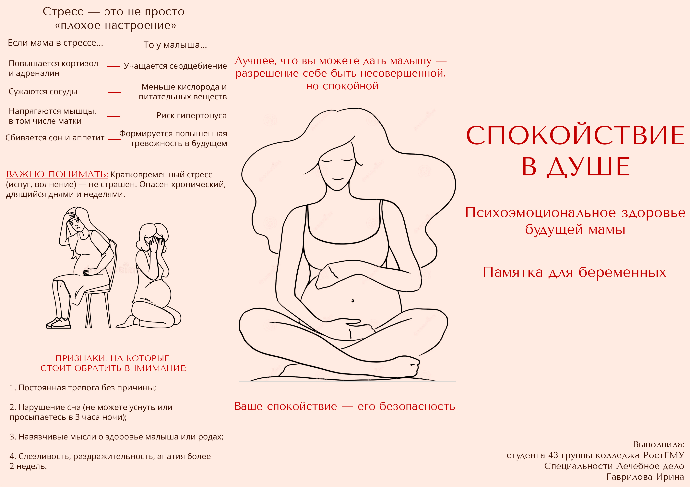
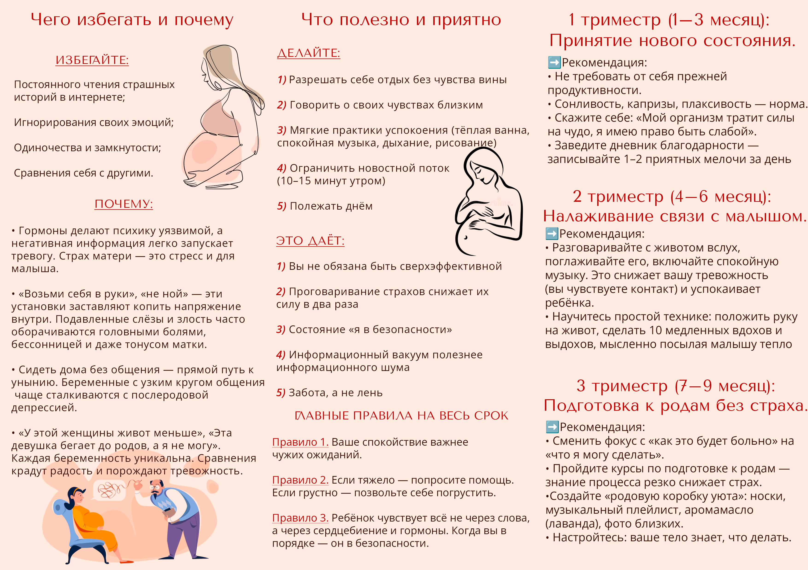

Библиотека будующей мамы
🗺️ Маршрутизация
что, когда и куда идти, чек-листы, госуслуги
- Приложение «Календарь беременности» (BabyLenta) календарь по неделям, напоминания о визитах к врачу и сдаче анализов, счётчик шевелений
- Чек-лист в роддом (Инфоурок, вариант 1) структурированный PDF: документы, вещи для мамы, для малыша, на выписку
- Чек-лист в роддом (Инфоурок, вариант 2) редактируемый PDF
- Чек-лист в роддом (Элевит) с разделами: документы, комфорт мамы, для малыша, выписка
- Чек-листы для 4-го триместра (послеродовой период) официальный документ от SMFM (перевод MedElement)
- Сайт «сохрани.рф» господдержка для беременных и семей в трудной жизненной ситуации
- Сайт «основано.рф» все региональные меры поддержки для родителей и цифровые сервисы
🧘 Я и моё тело
физическая активность, упражнения, дыхание, лайфхаки
- Дыхательная гимнастика (Госуслуги) пошаговая техника дыхания диафрагмой и грудью
- Правильное дыхание при родах (Huggies) подробное руководство по дыханию на схватках и потугах
- ЛФК при беременности (справочник, PDF) таблицы упражнений по триместрам с дыхательными техниками
- 10 способов расслабиться во время беременности свекольный сок, самовнушение, йога смеха, музыка Моцарта
- 7 неочевидных лайфхаков для счастливой беременности «матрёшка-гардероб», спасательный чемоданчик в сумке, антистресс-бокс
- Обзор NIH: биодинамические интервенции в родах (PubMed) как смена позы тела может облегчить роды
-

Скачать PDFГрудное вскармливание — лучшая забота о малышеКак правильно кормить, чего избегать, советы по этапам
🥗 Здоровый образ жизни
питание, витамины, медицинские аспекты
- Памятка Роспотребнадзора о рационе беременных что добавить во 2-м триместре, почему ограничить соль и сахар
- Статья Минздрава «Неделя ответственного отношения к репродуктивному здоровью» про фолиевую кислоту, йод и вредные привычки
- Научная статья о лютеине при беременности (eLibrary, 2024) почему антиоксидант (шпинат, капуста, яйца) важен для мозга плода
- Приложение «Наш ребёнок» (RuStore) раздел для беременных: ответы на вопросы «можно ли кофе», «можно ли в баню» и др.
-

Скачать PDFЕдим с любовью и смысломЧто нельзя, что можно и полезно, советы по триместрам -

Скачать PDFДвижение — это жизнь, а не обязанностьЧего избегать, что полезно, советы по триместрам -

Скачать PDFЗабота о здоровье — лучшая защитаЧего избегать, что полезно, советы по триместрам -

Скачать PDFГотовимся к родам — ваш личный планЧего избегать, что полезно, советы по срокам
🧠 Психоэмоциональная поддержка
дневники, психология, поддержка, настроение
- «Моя Осознанная Беременность» – психологический дневник (ЛитРес) Марина Будаева, PDF, fb2, epub
- «Моя Осознанная Беременность» – психологический дневник (Aldebaran) альтернативная ссылка для скачивания
- Жиляев А.Г., Палачева Т.И. «Система психологического сопровождения беременности...» Казанский педагогический журнал. – 2022. – № 1
- Ходжамбердиева Г. и др. «Влияние психологической поддержки во время беременности...» Парадигма. – 2025. – № 11-3
- «А слабо выдохнуть попой?» — смешные истории с форумов для беременных для поднятия настроения
-

Скачать PDFБуклет «Спокойствие в душе» (часть 1)Влияние стресса на маму и малыша, признаки тревоги -

Скачать PDFБуклет «Спокойствие в душе» (часть 2)Чего избегать, полезные практики, советы по триместрам
📚 Другое
образование, научные обзоры, полезные сайты